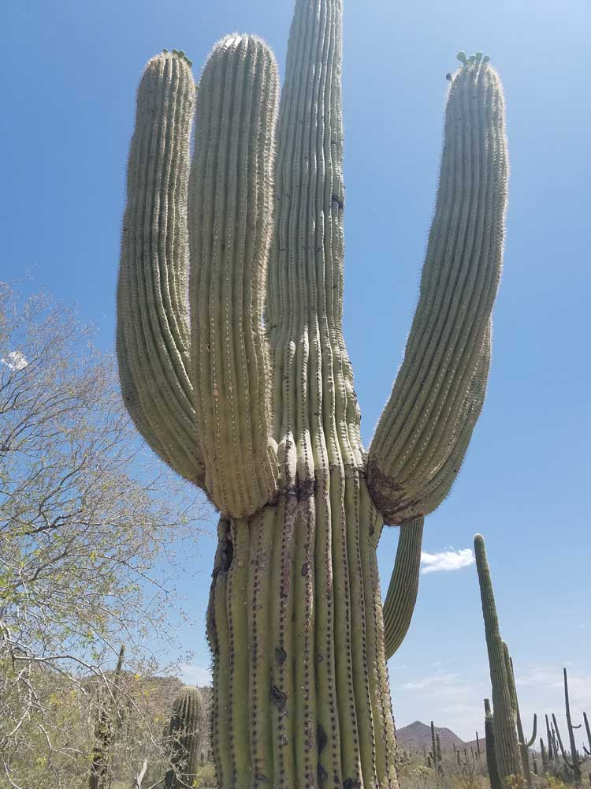
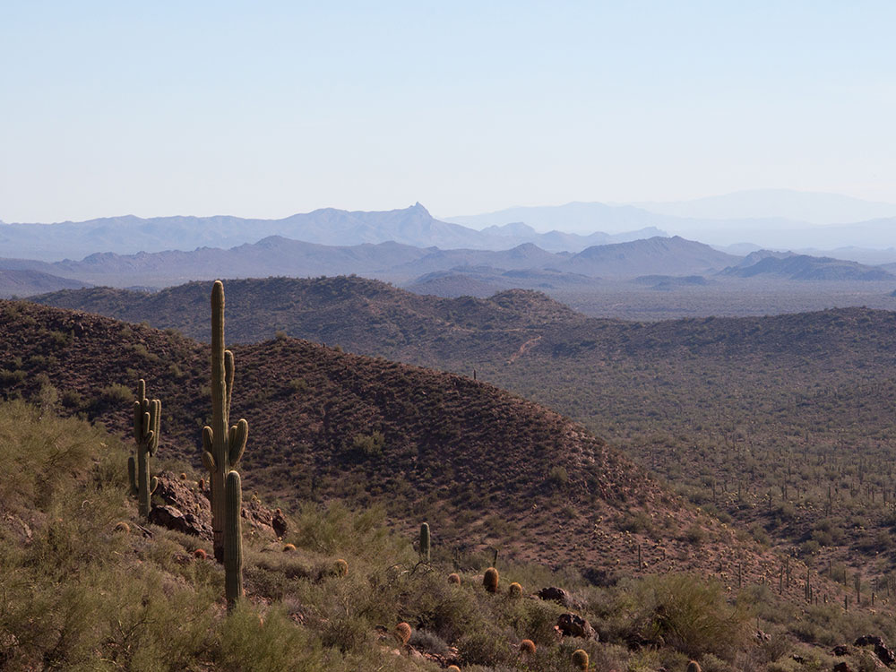
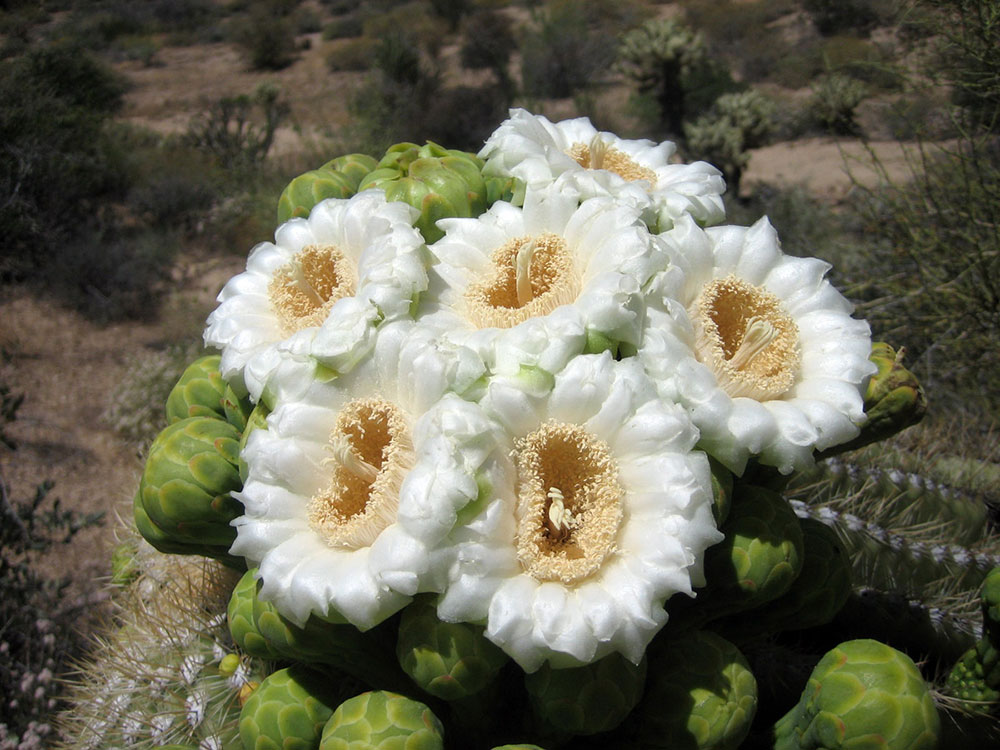

Saguaro National Park Travel Guide
National park protects two separate areas—the Tucson Mountain District and the Rincon Mountain District that preserve Sonoran Desert landscapes, fauna, and flora, including the giant saguaro cactus
General Information
Visitor Centers: October–May: 9:00 a.m. – 5:00 p.m.
June–September: 8:00 a.m. – 4:00 p.m.
Open year-round, closed on Thanksgiving and Christmas
Motorcycle: $20
Individual (on foot or bicycle): $15
Annual Saguaro Pass: $45
America the Beautiful Passes accepted
Not permitted on unpaved trails or in the backcountry
Summer (June–September) is extremely hot and less crowded
How to Get There
From Flagstaff to Tucson Mountain (West) (13 mi): Get on I-10 W from W Congress St. Follow I-10 W to I-10 Frontage Rd W in Marana. Take exit 248 from I-10 W. Take W Ina Rd to W Picture Rocks Rd.
From Flagstaff to Rincon Mountain (East) (16 mi): Head south toward W Congress St. Take AZ-210 E, Golf Links Rd and E Escalante Rd to Cactus Forest Dr. Turn right onto Cactus Forest Dr.
Overview
Saguaro National Park surrounds Tucson in southern Arizona with two districts, the Tucson Mountain District to the west and the Rincon Mountain District to the east. Together they protect about 92,000 acres of Sonoran Desert and the giant saguaro cactus, the symbol of the American West, which grows naturally only in the Sonoran Desert. An estimated 1.8 million saguaros live here. They can grow up to 60 feet tall and live for 200 years, and a saguaro does not sprout its first arm until it is 50 to 70 years old.
President Herbert Hoover established Saguaro National Monument in the Rincon Mountains in 1933, John F. Kennedy added the Tucson Mountain District in 1961, and Congress made it a national park in 1994. Visitors come to see forests of towering cacti, especially at sunrise and sunset, to take scenic drives and desert hikes, to look at petroglyphs, and to see desert wildlife. Spring brings wildflowers, and in late spring the saguaros bloom with white flowers, the state flower of Arizona. The park is easy to reach from Tucson, so many people visit in a few hours.
Park Sections
The two districts are about 30 miles apart, on opposite sides of Tucson, and have different characters. The Tucson Mountain District to the west, in the Tucson Mountains, has denser saguaro stands, the Red Hills Visitor Center, the Bajada Loop Drive, and the Signal Hill petroglyphs. It is reached from Tucson by Gates Pass Road or by Kinney Road. The Rincon Mountain District to the east is larger, higher, and wetter, with mountains rising to 8,666 feet, the Rincon Mountain Visitor Center, and the Cactus Forest Loop Drive. It is reached from downtown Tucson by Old Spanish Trail. Visitors with limited time often choose one district, with the west being closer to the Arizona-Sonora Desert Museum.
Sightseeing and Exploring the Park
Each district has a scenic drive. The Bajada Loop Drive in the west is about 6 miles long, mostly unpaved but suitable for most cars, and winds through dense saguaro forest with picnic areas and trailheads. Signal Hill, along the way, has a short walk to Hohokam petroglyphs and a panorama. The Cactus Forest Loop Drive in the east is an 8-mile paved one-way loop with pullouts, picnic areas, and trailheads, which is also popular with cyclists. Sunrise and sunset are the best times, when the cacti glow and the light is soft. The nearby Arizona-Sonora Desert Museum is a short drive from the west district.
Hiking
The park has about 165 miles of trails. In the west, the Valley View Overlook Trail (0.8 miles) and the Signal Hill Trail (0.3 miles) are short and easy, and the Desert Discovery Nature Trail (0.5 miles) is wheelchair accessible. The King Canyon and Hugh Norris Trails climb to Wasson Peak (4,687 feet), a strenuous hike of 8 miles or more round trip. In the east, the Freeman Homestead Nature Trail (1 mile) and the Mica View Trail are easy, while the Tanque Verde Ridge and Douglas Spring Trails climb into the Rincon Mountains. Summer heat is dangerous, so hike early in the day, carry plenty of water, and watch for rattlesnakes.
Other Activities
Beyond sightseeing and hiking, the park offers bicycling on the Cactus Forest Loop Drive and some other roads and trails, horseback riding on designated trails, ranger-led walks and talks, stargazing, and birdwatching. Backcountry camping in the Rincon Mountains is allowed with a permit. Photographers come for the saguaro silhouettes at sunset, and the spring wildflower display. There are no cave tours or commercial outfitters in the park, but tour companies and bike rental shops are available in Tucson.
Flora and Wildlife
The saguaro is the star, but the park also has ocotillo, prickly pear, cholla, barrel cactus, palo verde, ironwood, and mesquite, and higher in the Rincons there are oak woodland and pine forest. Wildlife includes coyotes, javelinas, bobcats, desert tortoises, Gila monsters (rarely seen), roadrunners, Gila woodpeckers, and gilded flickers, which nest in saguaros. Rattlesnakes and scorpions live here too. Most animals are active at dusk and dawn or at night. Viewing is on your own, and ranger-led programs often focus on desert wildlife.
Access
Both districts are within the Tucson metropolitan area. The Tucson Mountain District is about 15 miles west of downtown, and the Rincon Mountain District is about 17 miles east. Tucson International Airport is about 20 minutes from either district, and Phoenix is about 1.5 hours (115 miles) northwest on I-10. Visitors arrive by car, and public transportation does not reach the park, though rideshares and taxis are available in Tucson. Roads are paved to the visitor centers and the main trailheads, with the Bajada Loop Drive partly gravel.
Seasons
The best time to visit is from October through April, when temperatures are mild and comfortable for hiking. Late winter and early spring bring wildflowers in good years, and the saguaros bloom from late April through June. Summers are extremely hot, often above 105 °F, so visit at dawn or dusk, and the monsoon season from July to September brings thunderstorms, lightning, and flash floods. In winter, snow may fall in the Rincon Mountains, and nights can be near freezing. The park is open year-round, and no sections close seasonally, except for occasional closures after storms.
Camping and Lodging
There are no campgrounds or lodgings in the park. Backcountry camping in the Rincon Mountain District is allowed at designated sites with a permit and requires long hikes. Gilbert Ray Campground in adjacent Tucson Mountain Park is the closest developed campground to the west district. Tucson has hundreds of hotels and resorts within 30 minutes of either district, including the historic Arizona Inn, Hotel Congress downtown, and resorts such as the Westin La Paloma, Loews Ventana Canyon, and the Hilton Tucson El Conquistador. Catalina State Park, about 30 minutes north, offers a larger campground.
Visitor Centers
Each district has a visitor center. The Red Hills Visitor Center in the Tucson Mountain District has exhibits, a film, a bookstore, and a view of the desert, and rangers who can advise on trails and conditions. The Rincon Mountain Visitor Center in the east has similar exhibits and services, with a short film and a bookstore, and is near the Cactus Forest Loop Drive. Hours vary by season, so check the National Park Service website before you go.
This article uses material from the Wikipedia article "Saguaro National Park", which is released under the Creative Commons Attribution-Share-Alike License 3.0. Additional information comes from the National Park Service Saguaro National Park website.
Featured Locations
Tucson Mountain District
Rugged desert landscape characterized by volcanic hills, dense saguaro forests, and an extensive network of scenic hiking trails.
Rincon Mountain District
Expansive desert and mountain landscape featuring dense saguaro cactus forests, scenic drives, hiking trails, and elevations that rise into diverse ecological zones.


.jpg){kind=link}
